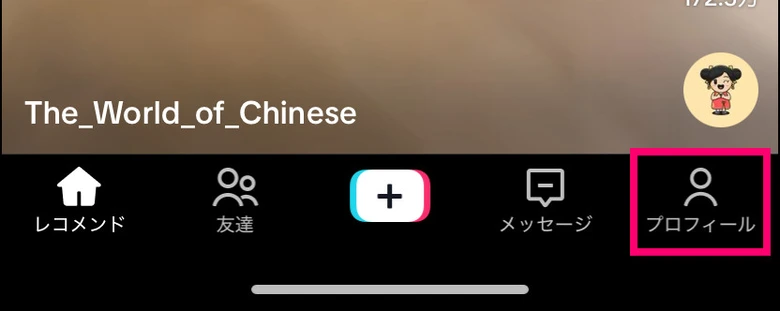
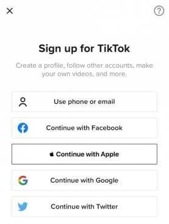
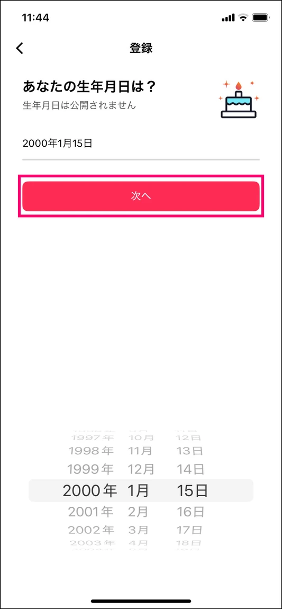
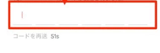
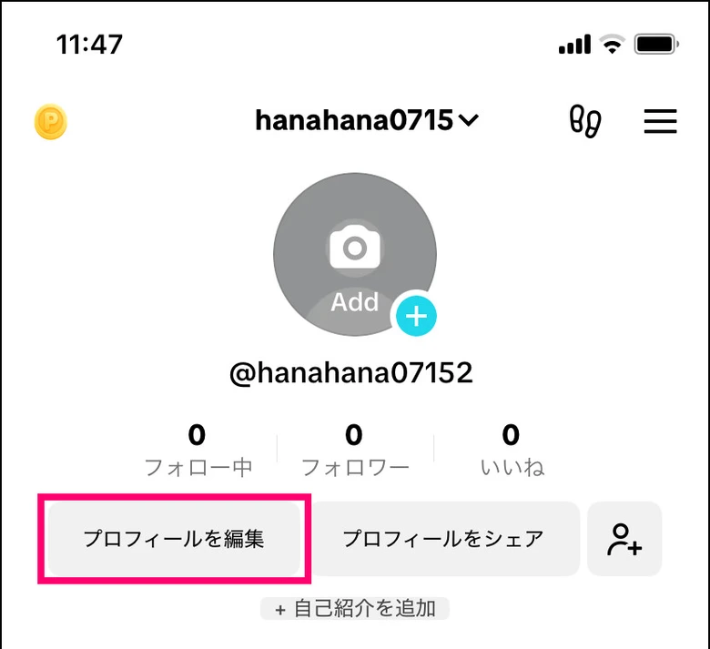
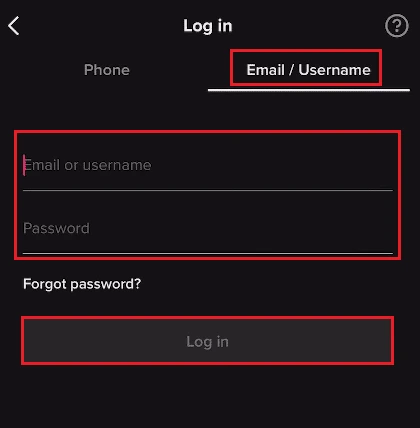

01打开 TikTok，找到「注册」
如果先看到视频，点右下角人形图标 Profile（个人资料）。看到 Log in to TikTok（登录） 时，点页面底部的 Sign up（注册）。看到 Sign up for TikTok 后，点 Use phone or email（使用手机号或邮箱）。





跟着手机截图，从「个人资料」进入注册，用自己的邮箱完成验证。已有账号可以直接跳到登录步骤。
准备一个自己能长期收信、还没有绑定其他 TikTok 账号的邮箱。已有的 Gmail、Outlook 等邮箱都可以。下图来自不同版本的 App，个别按钮名称和出现顺序可能不同；点截图可放大。 TikTok 官方注册说明
如果先看到视频，点右下角人形图标 Profile（个人资料）。看到 Log in to TikTok（登录） 时，点页面底部的 Sign up（注册）。看到 Sign up for TikTok 后，点 Use phone or email（使用手机号或邮箱）。


遇到生日页时，滑动年、月、日选好自己的出生日期，核对后点 Next（下一步）。如果你的版本先问邮箱，就先填邮箱，再按提示补生日。
看到 Phone 和 Email 两个标签时，点 Email（邮箱）。在 Email address 一栏输入完整地址，检查拼写和后缀，再点下一步。


如果 App 提示输入邮箱验证码，先保留当前页面。切到邮件 App，打开 TikTok 刚发来的邮件，再回到 TikTok，把最新验证码填进输入格。验证码只在自己的验证页面使用。
如果邮件显示 Verify your email address（验证邮箱地址） 按钮，核对是本次注册发起的验证邮件，点按钮，完成后返回 TikTok 继续。


出现 Create password（创建密码） 时，为 TikTok 单独设置一个符合屏幕要求的密码，保存在自己的密码管理器里。随后如需填写昵称或 @用户名，按提示完成；用户名已被占用时，换一个即可。
回到右下角 Profile，能看到自己的 @用户名 和 Edit profile（编辑资料），就已经进入账号。记下这个用户名，方便下次确认登录的是同一个账号。


下次打开 TikTok，选 Log in（登录），再选当初注册时使用的方式。
在登录页选 Use phone / email / username（使用手机号、邮箱或用户名），再点 Email / Username（邮箱 / 用户名）。输入注册邮箱或 @用户名，以及这个 TikTok 账号的密码。
如果 App 要求验证，再按它显示的收件地址或验证方式操作。忘记 TikTok 密码时，点 Forgot password?（忘记密码？），按提示用绑定的邮箱或手机号重设。TikTok 官方密码重设说明

选择原来的 Continue with Apple 或 Continue with Google，并选同一个 Apple 或 Google 账户。只是用 Gmail 地址填写了 TikTok 注册表的读者，仍走上面的邮箱登录。
先看屏幕上的原文。验证码、邮箱占用和账号封禁，各有不同的处理入口。
核对 TikTok 显示的邮箱和你打开的收件箱是否一致；在邮箱里搜索「TikTok」，也看看垃圾邮件、广告或推广分类。倒计时结束后可点 Resend code（重新发送）。收到多封时，使用最近一次请求对应的邮件。
如果这个邮箱以前注册过 TikTok，回到 Log in 登录原账号；忘记密码就走找回流程。创建另一个独立账号需要使用尚未绑定的邮箱。
打开 TikTok 的封禁通知，查看具体原因。如果认为处理有误，点通知中的 Appeal（申诉），按提示提交说明。如果遇到的是年龄验证，按该通知提供的年龄申诉流程处理。TikTok 官方封禁与申诉说明
已经安装并能打开 TikTok 的读者，可以直接从本文第一步开始。
打开「如何设置 iPhone 上的 TikTok 使用环境」，查看 App Store 下载与手机设置的实际操作图。